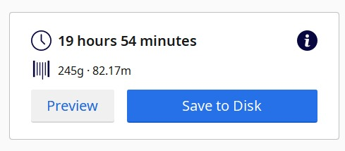

E05 - Impresión 3D

¿Que es y como funciona una impresora 3d?
Una impresora 3D es un dispositivo capaz de crear cuerpos físicos sólidos tridimensionales depositando material capa por capa en uno de sus ejes.
La impresión 3D es una avance muy importante de tecnologías de fabricación por adición donde un objeto tridimensional es creado mediante la superposición de capas sucesivas de material.
Esta máquina es capaz de realizar réplicas de diseños en 3D, creando piezas o maquetas volumétricas a partir de un diseño hecho por ordenador. Comúnmente se ha utilizado en el prefabricado de piezas o componentes, en sectores como la arquitectura y el diseño industrial.
El lenguaje 3D: G-Code
El G-Code es el fichero que contiene esa programación como un listado de instrucciones sencillas que la impresora tiene que seguir para imprimir la pieza correctamente.
G-code es un lenguaje mediante el cual las personas pueden decir a máquinas herramienta controladas por computadora qué hacer y cómo hacerlo. Esos “qué” y “cómo” están definidos mayormente por instrucciones sobre a dónde moverse, cuán rápido moverse y qué trayectoria seguir. Las máquinas típicas que son controladas con G-code son:
- fresadoras
- cortadoras
- tornos
- impresoras 3D.
Dentro de este último grupo, en el cual nos vamos a enfocar, podemos destacar el gran nuero de nuevas tecnologias de impresion 3D que han salido al mercado ultimamente, dentro de las mas conocidas tenemos de:
- Disposición de material fundido (FDM / FFF)
- Sintetizado de láser selectivo (SLS)
- Fotopolimerizacion por luz UV (SLA / DLP)
Programa Ultimaker CURA.

Para el siguiente ejercio vamos a ocupar el programa de impresión 3D “Ultimaker CURA”). El cual es uno de los softwares mas ocupados hoy en dia nivel mundial. Esto debido a su accesibilidad, al ser de codigo abierto, los usuarios pueden aportar y obtener material (modelos, planimetrias, información en general) de forma mucho mas rápida y sin costos.
En el siguiente link, pueden descargar el programa
https://ultimaker.com/es/software/ultimaker-cura
Ejercicio de Impresion 3D
1 - Preparación de Programa
En primer lugar se debe escoger la impresora que se va a ocupar para la impresion 3D. En este caso ocuparemos la impresora por disposicion de maerial fundido: “CREALITY ENDER-3”

2 - Elección de Material, Color y Boquilla.
Como segundo paso, se debe elegir el material: eSun -> PLA+. Luego se puede escoger el color, en este caso se escogio el color morado. Finalmente la boquilla debe ser de 0,4mm Nozzle.

3 - Preparación del Objeto.
Luego que se programó y configuró la impresora con sus respectivos materiales, se debe importar el objeto a imprimir. En este caso se escogio una maceta.

4 - Ajustes y Slice
En las ultimas configuraciones falta por cambiar en “Quality” el “layer high” por uno de 0.3mm. Para despues dar el boton “Slice”. El cual comienza con nuestro proceso de impresion 3D.

5 - Ajustes de tiempo.
Para reducir el tiempo de fabricación se puede reducir el “infill” de 20 a 6. Lo que reduce el tiempo de fabricaión en una 5 horas

